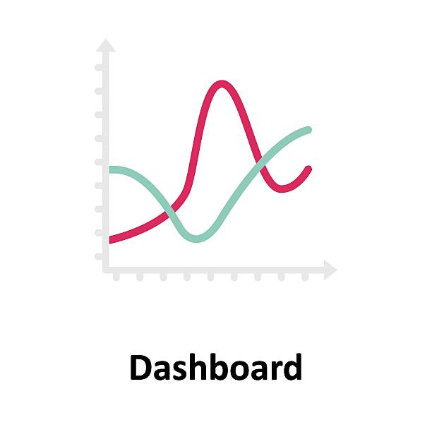
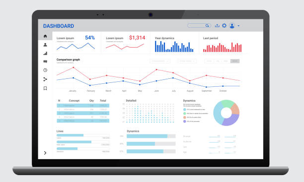

User Interface Gallery
Explore the intuitive and powerful dashboards designed to give transport analysts clear insights at a glance.

Overview Dashboard

Route Analysis Panel

Incident Monitoring
Driver Behavior Insights